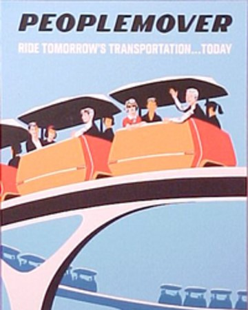
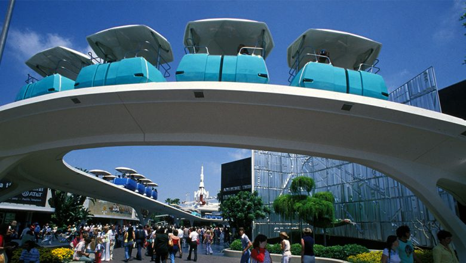
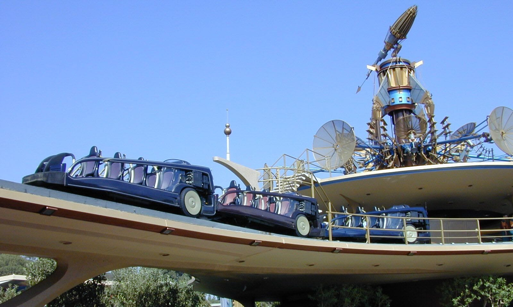
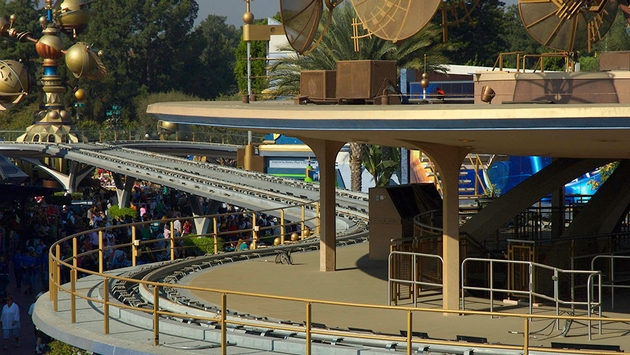

 The "world of tomorrow" was always something that Walt Disney, the creator of Disneyland, loved to experiment with. His fascination with the future led him to create a portion of Disneyland dedicated to the wonders of tomorrow. At the 1964 World Fair, where Walt had the honor of creating four attractions in different pavilions, one of them being sponsored by Ford. This advenure, Ford's Magic Skyway was a road through time, where guests rode in the newest Ford convertable model through history. The revolutionary aspect of this ride was the track mechanism. In order to prevent the Ford cars from running into one another, the track mechanism had the cars moving at all times, propelled forward by tires every 9 feet. This mechanism was used again when imagineers were working to create "New Tomorrowland" at Disneyland, and the concept of the PeopleMover was born. "propulsion into the world of tomorrow" Walt envisioned a new form of transportation being born with the design of the Ford attraction, floating high above the congested streets of cities, and eventually leading everyone to use the public transportation system in the sky, whose job was not to entertain, but was to "move people."
"more than simply a ride... a form of transportation" When Walt passed away in 1966, imagineers wanted to implement his concept somewhere, but didn't want to build his city of tomorrow, the Experimental Prototype Community of Tomorrow, without his help. Instead, they placed his PeopleMover design in Tomorrowland of his Disneyland park on July 2, 1967. The attraction was a smash hit until the 1990s, when children wanted something more thrilling, and imagineers determined the PeopleMover no longer served its purpose: showing guests what the world of tomorrow was like, leadingthem to determine that the PeopleMover was a thing of the past. In 1995, the PeopleMover closed, after a 28 year run, and CEO of the Walt Disney Company at the time, Michael Eisner, promised guests a more thrilling reimagination of the attraction. Imagineers attempted to build a new attraction using the same layout in the sky as the PeopleMover, eventually coming up with a concept known as the Rocket Rods. This attraction, which opened in 1998  had ridersboard rocket-shaped vehicles and speed over "New Tomorrowland." Unfortunately, the layout of the old PeopleMover track, which was full of sharp turns and designed for slow-moving vehicles, was inadequete for a fast-moving ride, and resulted in many sudden stops, making the attraction a jerky, poor substitute for the beloved PeopleMover.
 The Rocket Rods resulted in disaster, quickly deteriorating the track, as it was not built for speed or thrill. In September, 2000, the Rocket Rods were deemed unsafe and expensive, as the broke down extremely often, and closed for good, making it one of the shortest-lived attractions to ever be built at a Disney Theme Park. When the attraction closed, PeopleMover fans clung to the hope that the PeopleMover would restart operation, soaring through New Tomorrowland, like it was meant to, but the track was left empty and abandoned. Eventually imagineers released that the speed and force of the Rocket Rods had cracked the supports and the track for the PeopleMover, and in order to reopen, the entire track would need to be torn down and rebuilt, which was devestating news for the Walt Disney Company.
"a dream died the day the Peoplemover closed its doors" The issue of the PeopleMover is a complex one, as it floats above nearly all of Tomorrowland, and enters some attractions. The old PeopleMover track has been left abandoned because removing it would be expensive and dangerous, possibly resulting in a closure of all of Tomorrowland in order to ensure the safety of guests. Also, the PeopleMover supports are entertwined with the landscape of the area, and the track serves as roof pieces for some buildings. Luckily for fans, Walt Disney World has a version of the PeopleMover in their Tomorrowland, so fans can fly to Magic Kingdom if they  desperately want to ride their beloved PeopleMover. The fate of Disneyland's version of the PeopleMover is foggy, but hopefully, Disney's mid-90s mistake, the Rocket Rods, will not result in the extinction of Disneyland's PeopleMover, and Walt Disney's prototype that "moves people in a green tomorrow."